第 15 讲：玩法系统（Gameplay）——事件机制、脚本系统与 3C
把“游戏好不好玩”拆成可工程化的三块：对象怎么通信、逻辑怎么写、角色/操作/相机怎么调
◆ 学完这一讲，你应该能
能说清玩法系统为什么难：多系统协作、玩法多样、迭代要快
能画出发布-订阅事件机制的三个关键部件，并解释立即派发与事件队列的取舍
能说明脚本语言为什么被引入、它如何与引擎原生代码互相管理对象生命周期
能解释可视化脚本本质是一门编程语言，以及它和文本脚本的“孪生”关系
能复述 3C（Character、Control、Camera）各自包含什么，并举出至少两个手感优化手段
核心结论速记
玩法系统的核心矛盾是“多系统协作 + 玩法多样 + 快速迭代”，工程上要用解耦和脚本化来应对。
事件机制把世界通信抽象为消息，用发布-订阅模式解耦发送方与处理方；关键是事件定义、回调注册、事件派发三件套。
回调注册与执行的时间点不同，必须处理对象生命周期安全：强引用要手动反注册，弱引用要检查对象是否已销毁。
立即派发实现简单但会形成深回调井、阻塞主线程、难以并行；事件队列能延迟/批量处理，但要付出序列化、时间线不确定、一帧延迟的代价。
脚本语言带来快速迭代、热更新和沙箱稳定，但性能通常低于编译语言；Lua 轻量成熟，C# 在 Unity 中兼顾易用与性能。
可视化脚本本质是编程语言：变量用数据引脚与连线，语句/表达式用节点，控制流用执行引脚与连线，函数用函数图，类用蓝图。
3C 是决定玩法体验的第一要素：角色（移动/战斗/状态机）、操作（输入到逻辑、情境感知、组合键）、相机（POV/FOV、弹簧臂、相机特效与相机管理）。
相机的主观感受往往由多个基础调整叠加而成，例如速度感 = FOV 变化 + 相机抖动 + 特效 + 音效。
011. 玩法系统为什么难：三个挑战
课件开篇先给“难”下定义，而不是直接讲技术。玩法系统的挑战可以归为三类：
（1）多系统协作。 以格斗游戏的一次攻击为例：玩家按键 → 角色动画播放 → 命中判定 → 特效与音效 → UI 血条变化 → 手柄震动反馈。这一串跨越了输入、动画、物理/碰撞、音频、UI、特效、外设多个子系统，任何一个环节的时序或数据不一致，玩家就会觉得“手感不对”。
（2）同一款游戏里玩法多样。 课件举了《巫师 3》：战斗、卡牌（昆特牌）、骑马探索、对话选择，它们对输入、相机、UI 的要求完全不同，却要共享同一套引擎与角色系统。
（3）快速迭代。 课件用《堡垒之夜》从“拯救世界”的塔防+射击，演化出大逃杀模式作为例子：玩法方向可能在几个月内大改。如果每次改玩法都要改 C++ 并重新编译、打包、重启，迭代速度会被拖垮。
所以后续三节分别对应三个工程答案：事件机制解决“对象之间怎么通信而不互相写死”；脚本系统/可视化脚本解决“逻辑怎么写得快、改得快”；3C 解决“体验怎么调得好”。
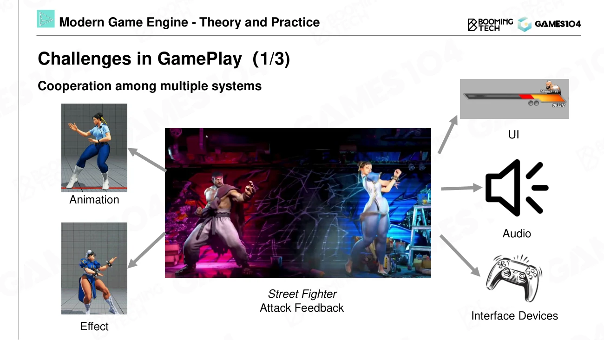
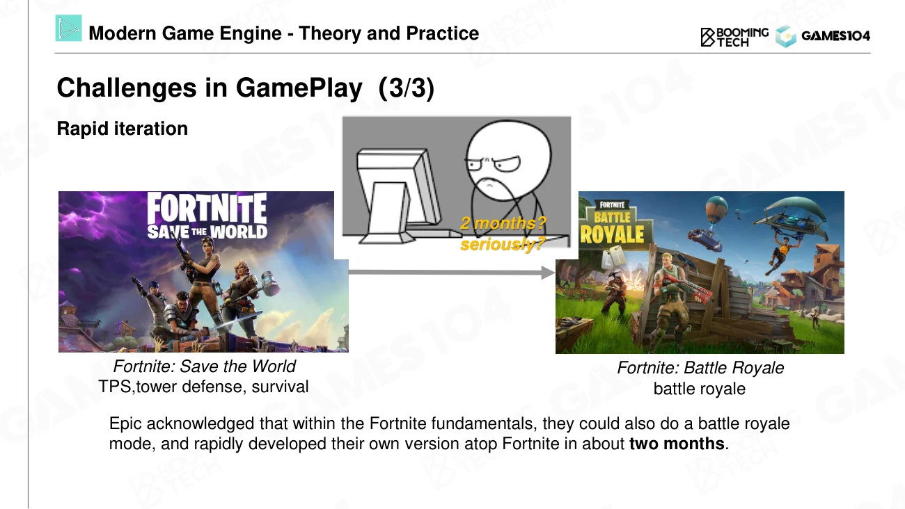
常见坑
把玩法逻辑直接写进角色类 → 角色类膨胀成“上帝类”，改一处崩一片 → 用事件/组件拆分职责。
认为“玩法就是策划的事，跟引擎架构无关” → 迭代速度被编译打包卡死 → 提前规划脚本层与数据驱动。
UE / Unity 落地
UE：Gameplay 逻辑可用 C++ 打底、Blueprint 做上层迭代；改蓝图不需要重编 C++，只热重载/重开编辑器。
Unity：MonoBehaviour 脚本天然支持快速迭代，但大量逻辑堆在一个脚本里同样会变成上帝类，需用事件/ ScriptableObject 解耦。
022. 让对象说话：发布-订阅事件机制
课件用“士兵、直升机、石头、坦克”说明：如果每个对象都直接持有其他对象的指针并调用对方方法，世界会变成一张全连接网，加一个新对象就要改很多旧代码。解法是把通信抽象成消息（message/event）：发送方只负责“喊一声”，不关心谁听；接收方只订阅自己关心的事件类别。这就是发布-订阅模式（publish-subscribe pattern）。
它由三个关键部件组成：
- 事件定义（Event Definition）：事件有类型（如
EVENT_TYPE_BOMB_EXPLOSION）和参数。参数可以是键值表（key-value table），也可以是强类型的 C++ 类，例如class BombExplosionEvent : public Event { Point m_center; float m_damage; float m_radius; };。课件还提到用反射（reflection）让事件参数在编辑器里可编辑、可序列化。 - 回调注册（Callback Registration）：订阅者把自己的成员函数注册到某个事件类型上。
- 事件派发（Event Dispatch）：事件发生时，派发器找到该类型的所有回调并调用。
一个容易忽略的点是：注册的时间点和执行的时间点不同。注册时对象还活着，执行时对象可能已经被销毁。课件因此专门讨论了对象生命周期与回调安全：强引用方案要求对象销毁前手动反注册；弱引用方案在派发时检查对象是否还有效。
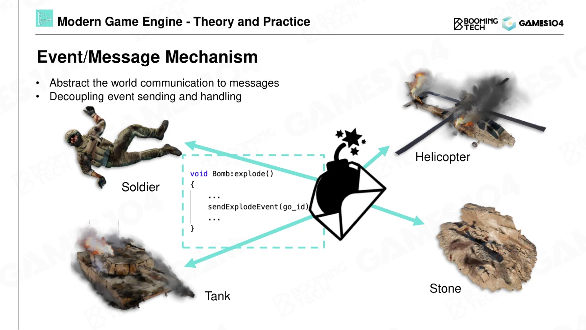
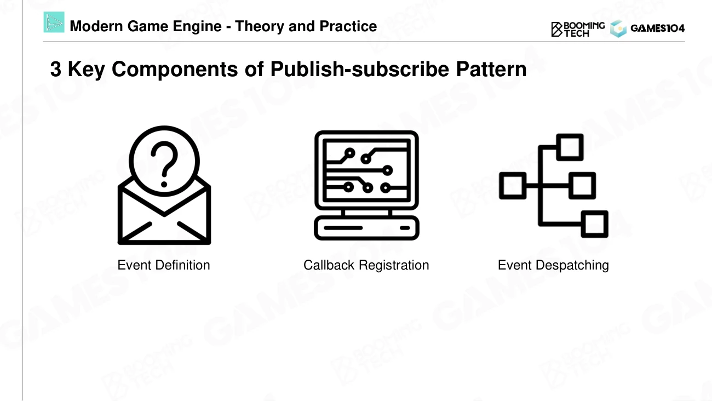
补充说明
课件把“事件定义”单列一节，是因为事件参数的设计直接决定序列化、网络同步和编辑器可编辑性，不是随手写个 struct 就完事。
常见坑
事件参数用裸指针/引用传递 → 事件被延迟处理时对象已销毁，访问悬空指针 → 参数按值拷贝或使用弱引用/句柄。
注册了回调却忘记反注册 → 对象销毁后派发器仍调用旧回调，崩溃或幽灵行为 → 在析构函数中成对反注册，或用弱引用派发。
UE / Unity 落地
UE：没有统一的全局“事件总线”，常用委托（Delegate）实现发布-订阅，如
DECLARE_DYNAMIC_MULTICAST_DELEGATE+Broadcast；Actor 销毁时动态委托会自动清理绑定。Unity：C# 的
event/Action就是发布-订阅；UnityEvent可在 Inspector 里可视化绑定回调，适合策划配置。
事件定义与回调注册的伪代码（对应课件的事件三件套）（cpp）
class Event { public: virtual ~Event() = default; };
class BombExplosionEvent : public Event {
public:
Point m_center;
float m_damage;
float m_radius;
};
// 注册：把成员函数绑定到事件类型
eventManager.registerCallback(
EVENT_TYPE_BOMB_EXPLOSION,
this, &Soldier::onBombExplosion);
// 派发：构造事件并广播
auto e = std::make_shared<BombExplosionEvent>();
e->m_center = pos; e->m_damage = 50.f; e->m_radius = 8.f;
eventManager.dispatch(e);033. 立即派发 vs 事件队列：两种时序策略的代价
事件派发有两种基本策略。
立即派发（Immediate）：事件一发生，同步调用所有回调。实现最简单，但课件指出三个问题：
- 回调井（deep well of callbacks）：炸弹爆炸 → 士兵受伤 → 触发死亡事件 → 掉落物品 → 触发拾取……调用栈越陷越深，调试困难。
- 阻塞：某个回调里做重活（例如加载流血特效资源），整个函数调用被卡住，帧时间飙升。
- 难以并行：效果系统、属性系统、战斗系统、弹药系统串在一条时间线上，无法安全地多线程处理。
事件队列（Event Queue）：把事件先存进队列，在未来的某个时间点统一处理。好处是发送方不被回调阻塞、可以批量处理、可以按系统分队列（网络事件队列、战斗事件队列、动画事件队列）。代价是：
- 需要序列化/反序列化：队列里要存各种类型的事件，通常要先把事件序列化成字节缓冲，处理时再反序列化。
- 时间线不由发布者决定：发布者发出“开火”，但“生成子弹”“扣弹药”“加特效”分别由不同系统在各自队列里处理，顺序不再直观。
- 一帧延迟：事件在本帧入队、下帧才处理，快速连招或网络同步时可能出现“慢半拍”。
实现上常用环形缓冲（ring buffer）存事件，容量固定、无动态分配、缓存友好。
选型直觉：对时序敏感、要求立刻生效的（如输入、命中判定）用立即派发；对可以延后、需要批量或跨系统解耦的（如特效、音效、统计、网络）用事件队列。
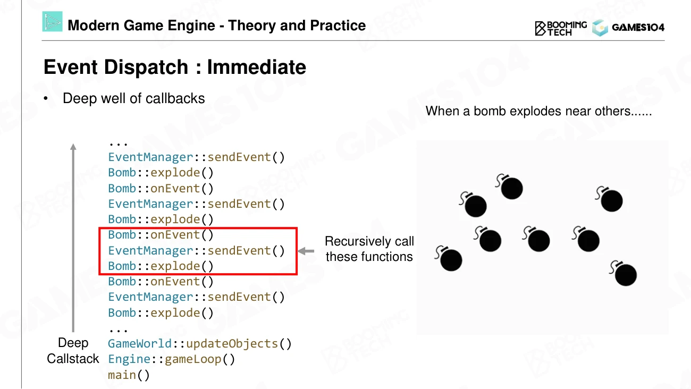
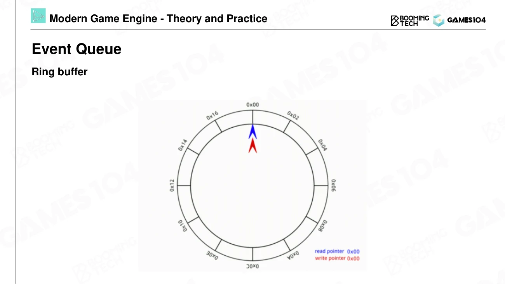
常见坑
所有事件都走队列 → 输入到开火出现一帧延迟，手感发粘 → 输入/命中类事件改为立即派发。
队列里存事件对象指针 → 对象在出队前被销毁 → 入队时序列化拷贝，或使用带生命周期的句柄。
环形缓冲满时静默丢事件 → 高峰期特效/音效丢失 → 监控队列水位，满时扩容或降级。
UE / Unity 落地
UE：
UWorld::Tick内各 Actor 的 Tick 顺序本身就是一个隐式“时间线”；FTimerManager可把逻辑延迟到未来帧，类似轻量事件队列。Unity：
Coroutine/yield return null把逻辑推迟到下一帧，Invoke延迟调用，都是事件队列思想的手边工具。
044. 脚本系统：为什么让策划直接写逻辑
早期游戏逻辑基本用 C/C++ 写：编译成机器码、性能高、工具链成熟。但随着硬件进化、游戏需求变复杂，纯编译语言的三个问题暴露出来：
- 迭代慢：改一行逻辑要编译、链接、打包、重启。
- 门槛高：策划/美术无法直接控制逻辑，只能写需求文档，再经过程序员翻译，沟通损耗大。
- 易崩溃：原生代码里一个越界就可能带崩整个进程。
脚本语言（scripting language）的引入正是为了“粘合策划与程序员”：它易学易写、支持热更新（hot update）、运行在虚拟机（VM）沙箱里，崩溃通常只影响脚本层。
脚本怎么跑？课件给的链路是：脚本文本 → 编译器 → 字节码（bytecode） → 虚拟机执行。也有直接解释执行的变体，但字节码+VM 是主流，因为字节码比源码解析快、又比机器码更容易跨平台和热更。
脚本与引擎之间还有对象管理问题：
- 原生引擎侧：需要对象生命周期管理（引用计数、GC 或手动管理），并把对象暴露给脚本。
- 脚本侧：对象生命周期通常由脚本 VM 自动管理（GC），但跨语言边界要防止“脚本还持有、原生已销毁”。
架构上有两种极端：原生语言主导（大部分逻辑在 C++，脚本只做扩展，性能好但迭代慢）和脚本语言主导（大部分逻辑在脚本，原生只提供底层能力，迭代快但性能与调试成本高）。实际项目多在两者之间取平衡。
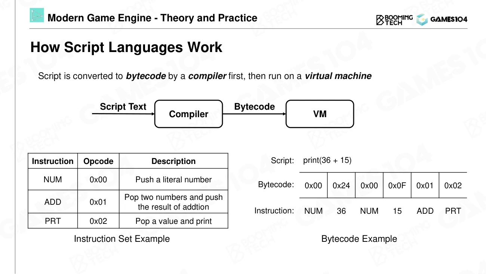
常见坑
把每帧高频逻辑（如逐帧移动、大量实体更新）放进脚本 → 性能骤降 → 热点逻辑下沉到原生代码，脚本只做编排。
脚本持有原生对象裸指针，原生对象先销毁 → 访问已释放内存 → 用句柄/弱引用，或在销毁时通知脚本层。
UE / Unity 落地
UE：C++ 为底层，Blueprint 为上层；若接 Lua 常见于国内项目，用 UnLua/SLua 等方案做热更新。
Unity：C# 编译为 IL，由 IL2CPP 或 Mono 运行时执行；
ScriptableObject常用来做数据驱动的玩法配置。
055. 可视化脚本：连线就是一门编程语言
可视化脚本（visual scripting）面向非程序员（策划、美术），拖拽比敲代码不易出错，还能直接看到逻辑结构。但课件强调一个关键认知：可视化脚本也是一门编程语言，它必须补齐编程语言的要素：
- 变量（Variable）：基本类型（整数、浮点）与复杂类型（结构体/对象），分成员变量与局部变量。可视化上体现为数据引脚（data pin）与数据连线（data wire），每种类型有独特颜色/形状，防止连错。
- 语句与表达式（Statement & Expression）：语句表达“做什么”（如赋值），表达式产生值。可视化上体现为节点（node）：语句节点、表达式节点。
- 控制流（Control Flow）：顺序、条件分支、循环。可视化上体现为执行引脚（execution pin）与执行连线（execution wire），白色实线表示“下一步执行谁”。
- 函数（Function）：输入参数、函数体、返回值，可视化上是一张函数图（function graph）。
- 类（Class）：成员变量 + 成员函数，可视化上就是蓝图（Blueprint），可继承原生类，并暴露事件回调函数。
课件还提到两个工程细节：模糊查找（fuzzy finding）与按类型精确建议，让节点搜索好用；以及可视化调试器，能高亮当前执行节点、查看引脚值。
最后是“孪生”关系：脚本图和文本脚本一样，最终都走 图编译器 → 字节码 → 虚拟机。所以可视化脚本不是“另一种东西”，只是同一套运行时的另一种前端。
它的现实问题也要知道：图通常存为二进制文件，多人合并困难；复杂逻辑图会变成“面条”，需要团队统一的布局规范。
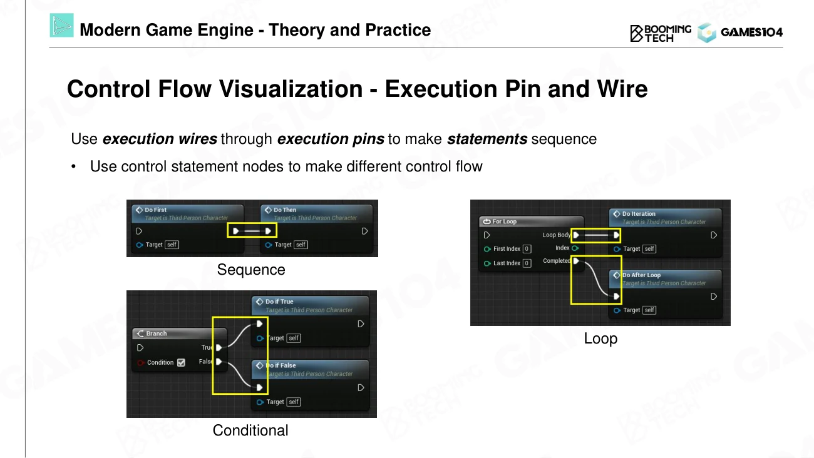
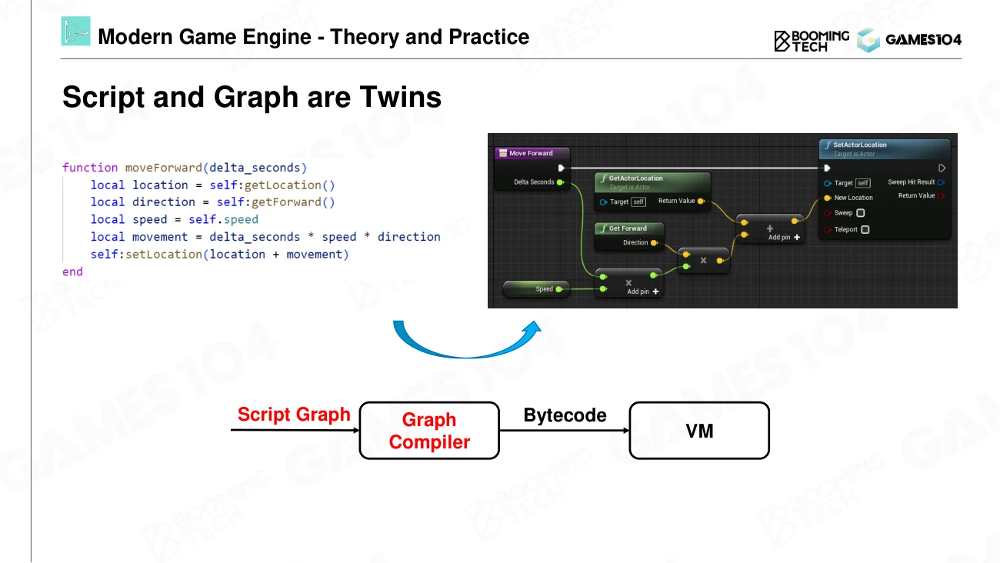
常见坑
把执行连线当数据连线接 → 逻辑不执行或值不对 → 记住白色执行线管顺序、彩色数据线管取值。
一张蓝图塞几百个节点 → 无法维护、无法合并 → 拆成函数/子图/组件，统一布局规范。
认为蓝图一定比 C++ 慢很多而完全不用 → 失去迭代速度 → 热点用 C++，编排与表现用蓝图。
UE / Unity 落地
UE：Blueprint 就是课件所说的“类可视化”，事件节点对应事件回调，函数/宏对应函数图；Blueprint Debugger 可断点查看引脚值。
Unity：Visual Scripting（原 Bolt）提供类似的节点图，但 Unity 主流仍是 C#，可视化多用于原型或策划配置。
066. 3C：角色、操作、相机决定手感
课件把玩法体验的第一要素归结为 3C：Character（角色）、Control（操作）、Camera（相机）。三者共同决定“玩起来是什么感觉”。
角色（Character）：不只是模型，还包括移动、战斗、生命/法力、技能天赋等。课件强调“移动看起来简单，做好很难”：AAA 游戏里每个基础动作状态都要打磨，还要扩展出悬挂、跳水、滑冰等复杂状态，并与特效、音效、环境交互协作。更真实的运动可以引入物理：气流、惯性张量、力矩等。角色状态通常用移动状态机（movement state machine）管理。
操作（Control）：不同输入设备、不同玩法需要不同映射。链路是“输入设备 → 输入信号 → 事件 → 游戏逻辑”。课件列了几个手感手段：
- 缩放（zoom in/out）：瞄准时拉近视野。
- 瞄准辅助（aim assist）：手柄玩家友好。
- 反馈（feedback）：震动、音效、准星变化。
- 情境感知（context awareness）：同一个键在不同场景做不同事（靠近掩体按 A 是翻越，靠近敌人按 A 是处决）。
- 组合键与按键序列（chord & key sequences）：同时按出组合技，或按手势序列识别。
相机（Camera）：先讲 POV（point of view，视点） 决定观察位置，FOV（field of view，视场角） 决定能看到多大范围。相机用 POV 与旋转绑定到角色；常用弹簧臂（spring arm）处理碰撞与跟随，用曲线控制 FOV 与距离。还有相机轨道（camera track）供场景编辑器使用、相机特效（抖动、滤镜）、以及相机管理器做多相机切换。
课件最后用“速度感”举例：它不是单一参数，而是 FOV 变化 + 相机抖动 + 运动模糊/滤镜 + 音效 + 动画叠加出来的主观感受。同理，“松弛感”来自相机缓动，“电影感”来自滤镜、运动、旁白、模型、动画、相机运动的综合。
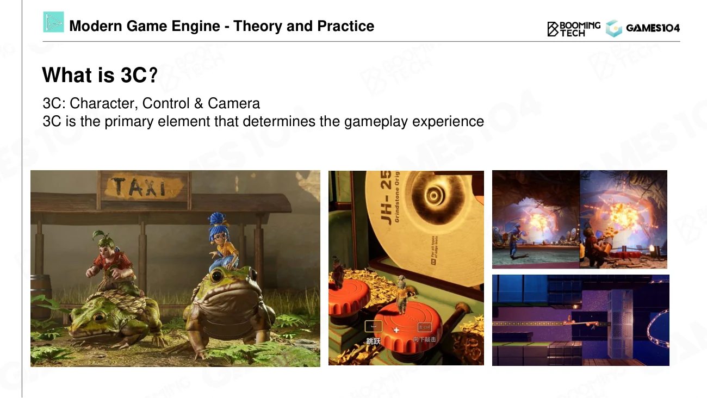
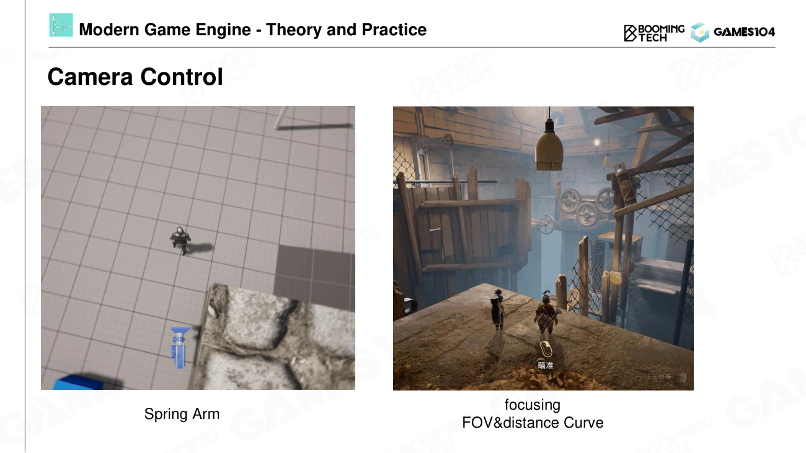
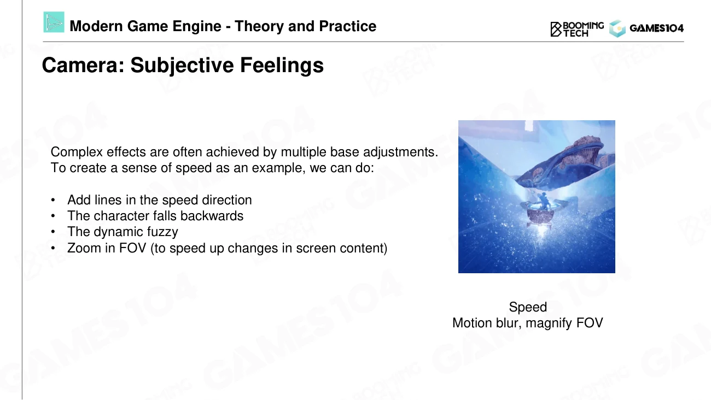
补充说明
课件最后一句“Everything is Gameplay”是提醒：玩法不是某个单独模块，而是所有系统在玩家侧的综合呈现。
常见坑
相机直接硬跟随角色 → 穿墙、抖动、眩晕 → 用弹簧臂做碰撞回退，加缓动与 FOV 曲线。
同一按键在所有场景绑同一功能 → 操作冗余、手感割裂 → 做情境感知映射，按状态切换输入意图。
角色移动只改位置不做状态机 → 动画切换生硬、连招打断 → 用移动状态机管理状态与过渡。
UE / Unity 落地
UE：Character Movement Component + Animation Blueprint 状态机对应角色移动；Enhanced Input 支持情境映射与组合键；SpringArmComponent + CameraComponent 是标准第三人称相机。
Unity：CharacterController/New Input System 对应操作层；Cinemachine 提供跟随、弹簧臂、相机抖动与多相机管理。
引擎对照表
| 概念 / 效果 | Unreal Engine | Unity |
|---|---|---|
发布-订阅事件 | 委托 Delegate / Multicast Delegate，Blueprint 里用 Event Dispatcher | C# event / Action，UnityEvent 可在 Inspector 绑定 |
延迟/队列式逻辑 | Timer Manager、Latent Action（Delay 节点） | Coroutine、Invoke、async/await |
脚本化玩法逻辑 | Blueprint（字节码 VM），可接 Lua 做热更 | C#（IL2CPP/Mono），Visual Scripting 做原型 |
可视化脚本 | Blueprint 蓝图（类、函数、宏、事件） | Visual Scripting（原 Bolt） |
角色移动与状态 | Character Movement Component + Animation Blueprint 状态机 | CharacterController + Animator 状态机 |
操作映射 | Enhanced Input（Input Action / Mapping Context） | Input System（Action Map / Binding） |
相机手感 | SpringArmComponent + CameraComponent + Camera Shake | Cinemachine（Follow、Collider、Noise） |
术语双语表
| English | 中文 | 说明 |
|---|---|---|
| Gameplay | 玩法系统 | 把规则、交互、反馈组织成玩家体验的引擎上层系统 |
| Publish-subscribe | 发布-订阅模式 | 发送方按事件类型发消息，订阅方按类型收消息，双方不直接持有 |
| Event Queue | 事件队列 | 事件先入队、未来统一处理，可批量但可能延迟一帧 |
| Ring Buffer | 环形缓冲 | 固定容量、首尾相接的队列实现，适合高频事件 |
| Scripting Language | 脚本语言 | 运行在 VM 上、支持热更新、易学易写的语言 |
| Bytecode | 字节码 | 脚本编译后的中间表示，由虚拟机解释/执行 |
| Hot Update | 热更新 | 游戏运行中替换脚本逻辑，不重启进程 |
| Visual Scripting | 可视化脚本 | 用节点与连线表达的编程语言，最终也编译为字节码 |
| 3C | 角色、操作、相机 | Character、Control、Camera，决定玩法体验的第一要素 |
| Spring Arm | 弹簧臂 | 相机跟随组件，遇障碍自动拉近，避免穿墙 |
课后练习
01 为什么课件说“立即派发”会形成“回调井”？请举一个游戏中的连锁事件例子，并说明事件队列如何缓解它。
查看答案
提示：
从炸弹爆炸开始想，谁受伤、谁死亡、谁掉落、谁拾取。
立即派发时，炸弹爆炸事件同步调用士兵受伤回调，受伤回调里同步触发死亡事件，死亡事件又同步触发掉落与拾取，调用栈一层层加深，难以调试且任一层做重活都会阻塞整帧。事件队列把“爆炸→受伤→死亡→掉落”拆成入队，由各系统在后续帧按自己的节奏处理，调用栈变浅，也便于批量与并行；代价是可能出现一帧延迟和时间线不确定。
02 事件参数用键值表（key-value table）和用强类型 C++ 类各有什么优缺点？
查看答案
提示：
从类型安全、序列化、编辑器可编辑性、性能四个角度想。
键值表灵活、易序列化和跨语言，新增参数不用改结构，但类型不安全、取值要查表、性能较差、编辑器提示弱。强类型类有编译期检查、访问快、可用反射暴露到编辑器，但新增参数要改类并重新编译，跨语言传递需要额外绑定。实际项目常强类型为主、反射/序列化为辅。
03 某项目把所有事件都放进事件队列，玩家反馈“开枪有一点点延迟”。请分析原因并给出两种修正方案。
查看答案
提示：
输入→开火→生成子弹→扣弹药→特效，哪些必须同帧？
原因是输入与命中判定这类时序敏感事件走了队列，本帧入队、下帧才处理，产生一帧延迟。修正一：把输入、开火、命中判定改为立即派发，只把特效、音效、统计等表现类事件留在队列。修正二：在帧内设置明确的“输入处理阶段”，在渲染前强制 flush 关键事件队列，保证同帧生效。
04 可视化脚本为什么被称为“一门编程语言”？请把它与文本脚本的五个要素一一对应。
查看答案
提示：
变量、语句/表达式、控制流、函数、类。
变量对应数据引脚与数据连线（按类型着色）；语句与表达式对应语句节点与表达式节点；控制流对应执行引脚与执行连线（白色线决定顺序）；函数对应函数图（输入参数、函数体、返回值）；类对应蓝图（成员变量、成员函数、可继承原生类、事件回调）。并且它和文本脚本一样经编译器生成字节码、在 VM 上运行，所以是同一运行时的不同前端。
05 请设计一个第三人称射击的相机方案：角色在掩体后、瞄准时拉近、被击中时抖动。写出你会调整的 4 个参数及理由。
查看答案
提示：
弹簧臂长度、FOV、抖动幅度/频率、跟随缓动。
1）弹簧臂长度与碰撞探测：防止相机穿墙，掩体后自动拉近；2）FOV：默认较大便于观察，瞄准时平滑缩小到较小值以拉近目标；3）相机抖动（shake）幅度与频率：被击中时短促小幅抖动传递反馈，避免眩晕；4）跟随缓动/插值速度：决定跟随的“松弛感”与响应速度，过快生硬、过慢滞后。可再加瞄准辅助与准星反馈。